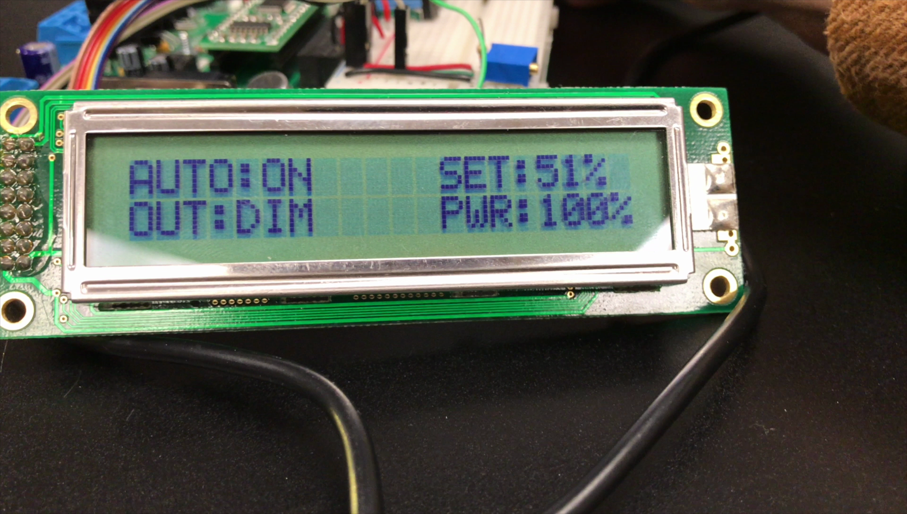

The device has automatic and manual adjustment modes. In
manual mode, the brightness of the LED's are controlled
directly by the user with a potentiometer on the Remote
Unit. In automatic mode, the brightness is adjusted based on
data from a photoresistor on the LED Unit. All information
about the system is displayed on an LCD connected to the
Remote Unit.
